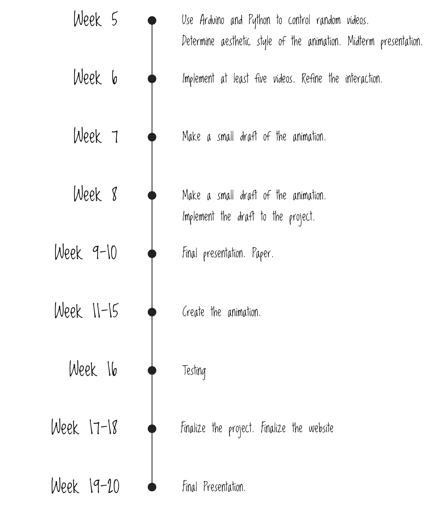

Distance and Understanding is a digital interactive installation that reflects the process of knowing and understanding a person with the change of the psychological distance to that person. It is mainly composed by two parts, a distance sensor and an animation series, As viewers approaches to the screen, they become more intimate to the person in the animation
Concept
As social beings, people behave in a way that conforms social norms and expectation when interacting with others, but deep down, they are more complex than they appear to be. In public, especially on social media, people’s behaviors are usually performative, which means they behave in a certain way that fulfills their social roles; while in private, they are more likely to follow their instincts. The contemplation on the process of how we know a person in our life is meaningful, since this process reflects how we perceive the signs created by others and how we create signs to present ourselves.
How does it work?
I am using Arduino, Adobe After Effects, and Python for this project. It is mainly composed by two parts, a distance sensor and six clips of short animations in abstract hand-drawing style. Each clip is approximately two-second long and represents a distinct level of knowing the fictional person in the animations. The distance sensor measures the distance between the installation and the viewer, a physical representation of the psychological distance between the viewer and the person in the animations.

As the distance changes, different clips will be triggered. When the viewer is standing far away from the installation, the animation only shows the person presenting himself or herself on social media or with the physical presence of other people. As the viewer approaches to the installation, the more negative and emotional side of the person is revealed.

Current Progess
This quarter, I have been mostly dealing with the electronic technique part. The connection between the distance sensor and animation is nearly functional, with some flaws in the sensitivity of interaction. I have made decision on the artistic style of the animations and made some still and animated draft.

Animation Draft

Timeline


© 2020 Jiayu Luo.